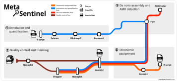

METAGENÔMICA
Abordagens em metagenômica e aplicação de pipelines
1. Introdução
1.1. Vigilância genômica e detecção de patógenos
1.2. A metagenômica e suas abordagens
1.3. Workflow - MetaSentinel
O MetaSentinel é um pipeline metagenômico utilizado para a detecção de patógenos e vigilância genômica. O workflow é dividido em quatro estágios:
Controle de qualidade, trimagem e filtragem dos dados
No primeiro estágio do pipeline se inicia a avaliação da qualidade dos dados brutos de sequenciamento utilizando o NanoPlot. Em seguida, os arquivos são submetidos a um tratamento com o Chopper em que são removidos adaptadores nas extremidades iniciais das sequências e uma etapa de filtragem ocorre baseando-se em critérios de qualidade e comprimento mínimo. Após esta etapa, a qualidade dos dados tratados é reavaliada com o NanoPlot e os resultados são consolidados em um relatório utilizando o MultiQC.
Classificação taxonômica
O segundo estágio recebe as sequências filtradas e realiza a classificação taxonômica. O Kraken2 fragmenta cada sequência tratada em segmentos menores de tamanho fixo, os k-mers, e consulta cada fragmento em um banco de dados que associa os k-mers a táxons. Havendo correspondência, o Kraken2 atribui a sequência ao táxon mais específico compatível com os k-mers encontrados. Quando os k-mers apontam para mais de um táxon, a sequência é atribuída ao ancestral comum mais próximo.
Após a identificação dos organismos presentes na amostra, os relatórios gerados pelo Kraken2 são enviados a um script em R, que estima a proporção de cada organismo identificado e gera um gráfico com os 20 mais abundantes.
As etapas de classificação taxonômica e de quantificação são feitas diretamente nas reads, portanto não dependem da montagem de contigs.
Montagem de novo
No terceiro estágio, é utilizado o software Flye, que reúne em contigs as sequências previamente tratadas pelo Chopper. A montagem é feita individualmente para cada amostra: o Flye identifica as sobreposições entre as reads e, a partir da união delas, constrói sequências maiores e contíguas, os contigs. O resultado desta etapa é um arquivo contendo sequências longas e lineares, o que possibilita a anotação de genes com maior precisão, a quantificação por sequência montada e a localização de genes de resistência.
Os arquivos gerados nesta etapa servem de base para os estágios seguintes do workflow.
Anotação
No quarto estágio, os contigs gerados pelo Flye são submetidos à anotação funcional e à busca por genes de resistência, por meio dos softwares DIAMOND e AMRFinderPlus. O DIAMOND é um alinhador de sequências proteicas de alto desempenho: ele traduz os contigs nos seis quadros de leitura possíveis e alinha as sequências traduzidas contra o banco de proteínas UniProt. Os alinhamentos significativos são associados ao banco de taxonomia do NCBI, o que permite atribuir a cada contig uma função provável e um táxon de origem.
Em paralelo, o AMRFinderPlus compara os contigs com o banco curado de genes de resistência antimicrobiana do NCBI, identificando genes associados à resistência a antimicrobianos e indicando a identidade, a cobertura e a classe de resistência de cada detecção.
Como resultado, esta etapa gera uma tabela de alinhamentos do DIAMOND, com a função e a taxonomia atribuídas, por meio de um número identificador, a cada contig, e uma tabela do AMRFinderPlus, com os genes de resistência detectados. Esses arquivos fornecem a identificação dos contigs usada na etapa seguinte, de quantificação da abundância, e permitem relacionar cada gene de resistência ao organismo de origem.
Quantificação
No último estágio, estima-se a abundância relativa de cada contig nas amostras. As reads tratadas são mapeadas nos contigs montados pelo Flye com o Minimap2, e os alinhamentos resultantes são usados pelo Salmon para quantificar cada sequência. O Salmon estima a abundância em TPM (transcripts per million), uma medida que normaliza a contagem de reads pelo comprimento do contig e pela profundidade total de sequenciamento da amostra. Isso permite comparar contigs de tamanhos diferentes e amostras com números distintos de reads. Em seguida, um script feito em linguagem R integra os valores de TPM às anotações do DIAMOND, de modo que cada contig quantificado seja associado à função e ao táxon atribuídos na etapa anterior.
Como resultado, o estágio gera um gráfico com os 20 contigs de maior TPM por amostra, ordenados do menor para o maior valor, com a anotação correspondente. Assim, é possível identificar quais organismos e funções predominam em cada amostra, complementando a visão taxonômica obtida diretamente das reads no segundo estágio.

2. Instalação e criação do ambiente de trabalho
O
2.1 Instalação do Conda
Caso o Conda ainda não tenha sido instalado, faça o download pela linha de comando.
wget https://repo.anaconda.com/miniconda/Miniconda3-latest-Linux-x86_64.shExecute o arquivo de instalação do Conda:
bash Miniconda3-latest-Linux-x86_64.sh2.2 Criação do ambiente e instalação do Nextflow
Crie um ambiente Conda instalando o Nextflow.
conda create -n nextflow_env -c bioconda nextflowAtive o ambiente:
conda activate nextflow_envVerifique a instalação do Nextflow
nextflow -version2.3 Download do MetaSentinel
Faça o download do pipeline diretamente da página oficial do GitHub:
git clone https://github.com/lmrtome/MetaSentinel.gitcd MetaSentinel- Linux (recomendado)
- Conda (Miniconda)
- Nextflow ≥ 24.x
- Conexão com internet para instalação das dependências, do pipeline e do banco de dados e para a primeira execução
- Espaço no armazenamento para os bancos de dados, os resultados e os dados brutos
3. Criação dos bancos de dados
Ao longo do pipeline, são utilizados três bancos de dados em cada módulo específico.
Criação do banco de dados Kraken2
Crie um ambiente conda com a ferramenta Kraken2.
conda create -n kraken2_env -c bioconda kraken2Ative o ambiente:
conda activate kraken2_envCriação do banco de dados DIAMOND
Crie um ambiente Conda com a ferramenta DIAMOND.
conda create -n diamond_env -c bioconda diamond=2.2.2Ative o ambiente:
conda activate diamond_envwget https://ftp.uniprot.org/pub/databases/uniprot/current_release/knowledgebase/complete/uniprot_sprot.fasta.gz gunzip uniprot_sprot_fasta.gzEntenda os comandos em detalhes
[Explique cada parâmetro, argumento ou parte do código. Você pode duplicar este bloco para diferentes comandos.]
wget https://ftp.ncbi.nlm.nih.gov/pub/taxonomy/taxdump.tar.gztar -xzf taxdump.tar.gzEntenda os comandos em detalhes
[Explique cada parâmetro, argumento ou parte do código. Você pode duplicar este bloco para diferentes comandos.]
wget https://ftp.ncbi.nlm.nih.gov/pub/taxonomy/accession2taxid/prot.accession2taxid.gzEntenda o comando em detalhes
[Explique cada parâmetro, argumento ou parte do código. Você pode duplicar este bloco para diferentes comandos.]
Construa o banco de dados DIAMOND.
diamond makedb --in uniprot_sprot.fasta.gz
--db diamond_database
--taxonmap prot.accession2taxid.gz
--taxonnodes nodes.dmp
--taxonnames names.dmpEntenda o comando em detalhes
[Explique cada parâmetro, argumento ou parte do código. Você pode duplicar este bloco para diferentes comandos.]
Criação do banco de dados AMRFinder.
Crie um ambiente Conda com a ferramente AMRFinder
conda create -n amrfinder_env -c bioconda ncbi-amrfinderplusAtive o ambiente:
conda activate amrfinder_envUtilize o comando para construir o banco de dados.
amrfinder_update -d ~/database/amrfinderplusamrfinder --database_versionEntenda os comandos em detalhes
[Explique cada parâmetro, argumento ou parte do código. Você pode duplicar este bloco para diferentes comandos.]
4. Execução do pipeline - Abordagem Amplicon
[Contextualização da etapa.]
Comando utilizado
nextflow run main.nf
--input /caminho_para_diretório/dados_de_sequenciamento/
--threads 10
--headcrop 30
--phredscore 10
--minlen 100
--database_kraken2 /caminho_para_diretório/banco_de_dados_kraken2
-output-dir /caminho_para_diretório/resultadosParâmetros principais
| Parâmetro | Função | Padrão |
|---|---|---|
--input | Diretório contendo arquivos de sequenciamento compactados | Exigido |
-output-dir | Diretório de saída e armazenamento dos resultados das análises | MetaSentinel_results |
--threads | Número de threads utilizadas pelo CPU | Função |
--minlen | Tamanho mínimo mantido após a filtragem | 100 |
--phredscore | Qualidade Phredscore mínimo mantido após a filtragem | 10 |
--headcrop | Número de bases removidas do início de cada sequência | 30 |
--database_kraken2 | Caminho para o diretório contendo o banco de dados Kraken2 | Exigido |
5. Execução do pipeline - Abordagem Shotgun
Comando utilizado
nextflow run main.nf \
--run_assembly true
--input /home/user/reads
--threads 10
--headcrop 30
--phredscore 10
--minlen 100
--database_kraken2 /caminho_para_diretório/banco_de_dados_kraken2/
--database_diamond /caminho_para_diretório/banco_de_dados_diamond/uniprot_sprot_tax.dmnd
--taxa_names /caminho_para_diretório/banco_de_dados_diamond/names.dmp
--database_amrfinder /caminho_para_diretório/banco_de_dados_amrfinder/latest
--read_type nano-hq
-output-dir /caminho_para_diretório/resultadosParâmetros principais
| Parâmetro | Função | Padrão |
|---|---|---|
--input | Diretório contendo arquivos de sequenciamento compactados | Exigido |
-output-dir | Diretório de saída e armazenamento dos resultados das análises | MetaSentinel_results |
--threads | Número de threads utilizadas pelo CPU | Função |
--minlen | Tamanho mínimo mantido após a filtragem | 100 |
--phredscore | Qualidade Phredscore mínimo mantido após a filtragem | 10 |
--headcrop | Número de bases removidas do início de cada sequência | 30 |
--database_kraken2 | Caminho para o diretório contendo o banco de dados Kraken2 | Exigido |
--database_diamond | Caminho para o diretório contendo o banco de dados formatado DIAMOND (.dmnd) | Assembly workflow |
--taxa_names | Caminho para o arquivo de taxonomia do NCBI names.dmp usado para anotação | Assembly workflow |
--database_amrfinder | Caminho para o diretório contendo o banco de dados AMRFinder | Assembly workflow |
--read_type |
6. Resultados do Pipeline
[Descreva como a qualidade, desempenho ou consistência do resultado será avaliada.]
Métricas de avaliação
- [Métrica 1 e o que ela representa.]
- [Métrica 2 e o que ela representa.]
- [Métrica 3 e o que ela representa.]
Exercícios e questões para discussão
- [Questão conceitual relacionada à aula.]
- [Questão prática: peça para executar, modificar ou comparar um comando.]
- [Questão de interpretação: peça para analisar um resultado.]
Desafio adicional
[Proponha uma atividade de aprofundamento ou uma alteração no workflow.]
Objetivos de aprendizagem
Ao final desta aula, espera-se que você seja capaz de:
- [Objetivo 1: descrever uma habilidade ou conceito.]
- [Objetivo 2: executar uma etapa do workflow.]
- [Objetivo 3: interpretar os resultados obtidos.]
Pré-requisitos
[Liste conhecimentos, programas ou arquivos necessários antes de iniciar.]
Amostra selecionada para a execução do workflow
[Descreva a origem dos dados, organismo, tipo de amostra, tecnologia de sequenciamento e características relevantes.]
| Característica | Descrição |
|---|---|
| Organismo / amostra | [Preencher] |
| Tipo de dado | [Ex.: reads paired-end] |
| Plataforma | ONT - Oxford Nanopore technology |
| Arquivo de entrada | [arquivo.fastq.gz] |
Referências e materiais complementares
Referências
- [Autor(es). Título. Periódico, ano. DOI ou URL.]
- [Material complementar, tutorial ou conjunto de dados.]
Materiais complementares
- [Autor(es). Título. Periódico, ano. DOI ou URL.]
- [Material complementar, tutorial ou conjunto de dados.]